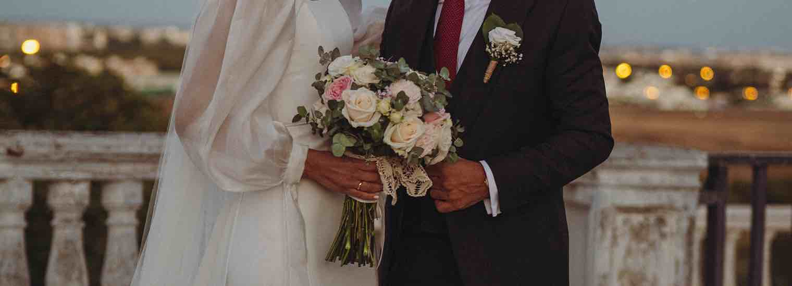
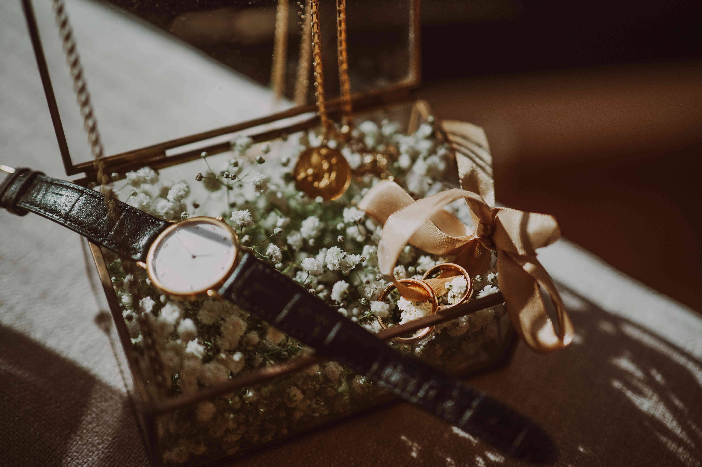
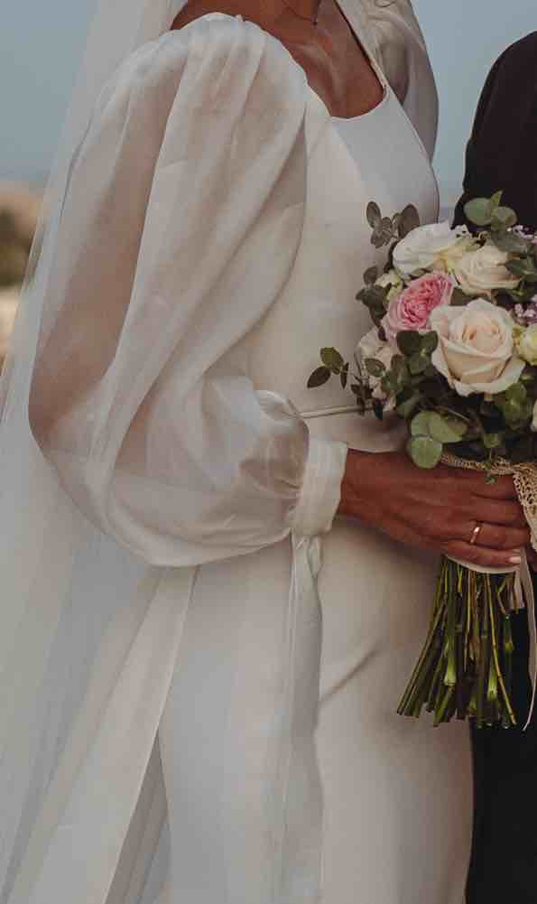

«Continua a guardarmi. Nessun altro conta.»
Una atmósfera de serie
Desde nuestras primeras conversaciones, Carolina me confesó su profunda fascinación por el universo de Los Bridgerton y su deseo de impregnar su boda de ese romanticismo clásico, aristocrático y palaciego. Captar esa esencia implicaba ir más allá de lo puramente visual.


Para la narrativa sonora, seleccioné una pieza de la banda sonora original de la serie en su versión para violín. Sin embargo, trabajé sobre la versión original, mezclándola y estructurándola a mi gusto para acompasar orgánicamente la intensidad de sus miradas, los votos y la atmósfera de profunda intimidad que se respiró durante toda la velada.
Ya solo quedaba hacer su sueño realidad.
¡Dale al play y disfruta!
Ficha Técnica
Grabación
Marisabfilm
Diseño Sonoro & Mezcla
Marisabfilm ("Wildest Dreams" Taylor Swift)
Edición & Color
Marisabfilm
Cámaras & Ópticas
Panasonic Lumix S5 Mark II · 50mm
Localización
Sevilla, España
Formato Final
Digital · 4K